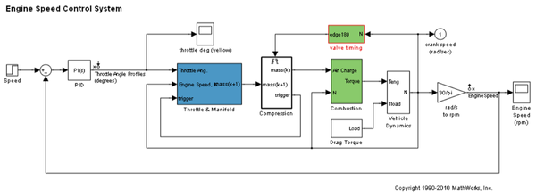
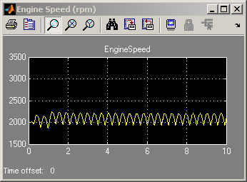
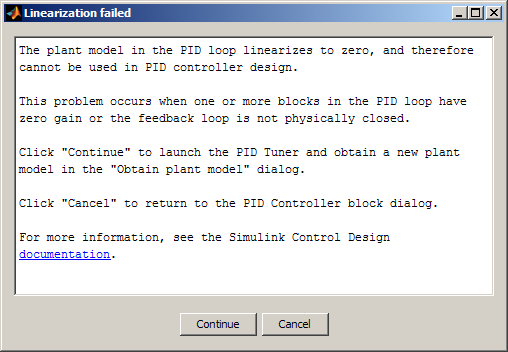
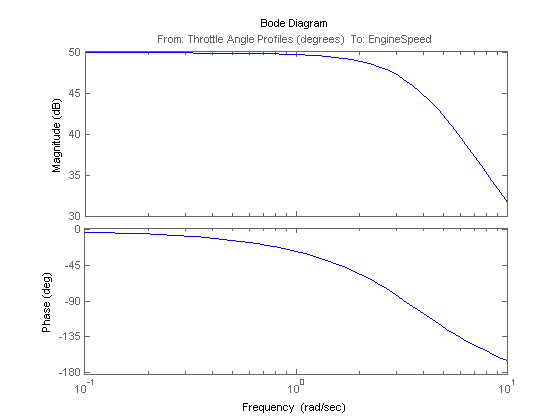
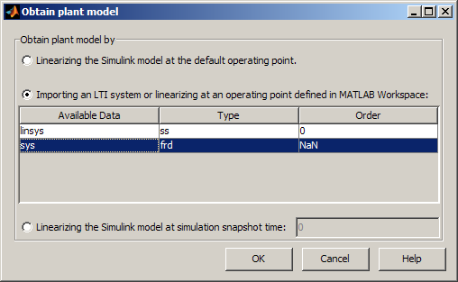
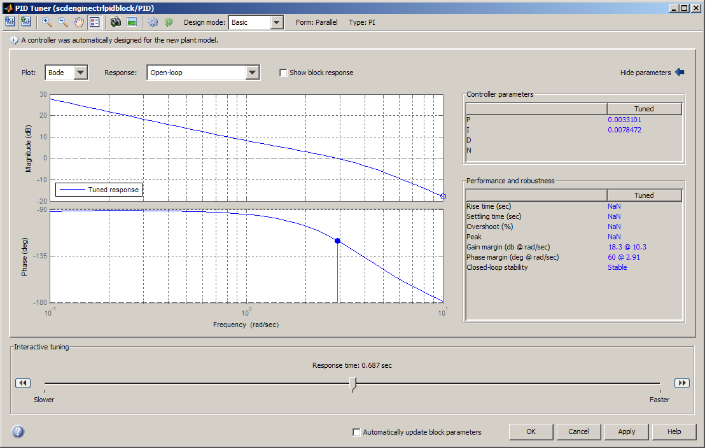
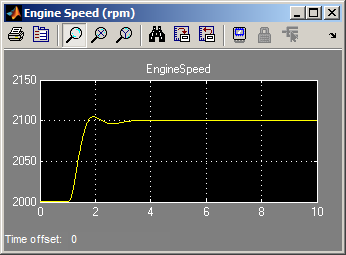

推定周波数応答を使用して Simulink で PID コントローラーを設計
このデモでは、Simulink でビルドされたプラントから推定される周波数応答を使用して PI コントローラーを設計する方法を説明します。これは、線形化プラント モデルが PID 設計に対して無効な場合 (たとえば、プラント モデルにゼロ ゲインがある場合など) に使用できる PID 設計の代替ワークフローです。
目次
モデルを開く
少し時間をとって、モデルを調べます。
mdl = 'scdenginectrlpidblock';
open_system(mdl)
 PID ループには、スロットル角度を操作してエンジン速度を制御する並列形式の PI コントローラーが含まれています。PI コントローラーには、閉ループ システムを振動させる既定のゲインがあります。PID ブロックのダイアログから起動する PID 調整器を使用してコントローラーを設計します。
open_system([mdl '/Engine Speed (rpm)'])
sim(mdl);
 線形化 からのゼロ ゲインを伴うプラント モデルを取得する PID 調整器
この例では、PID ブロックによって検知されるプラントは、スロットル角度からエンジン速度です。線形化の入出力ポイントは、PID ブロック出力とエンジン速度測定でそれぞれ既に定義済みです。初期操作点での線形化では、ゼロ ゲインのあるプラント モデルが作成されます。
% Hide scope close_system([mdl '/Engine Speed (rpm)']) % Obtain the linearization input and output points io = getlinio(mdl); % Linearize the plant at initial operating point linsys = linearize(mdl,io)
d =
Throttle Ang
EngineSpeed 0
Static gain.
ゼロ ゲイン取得は、線形化パス内にトリガーされたサブシステム "Compression" が存在すること、および分析的なブロックごとの線形化がイベント ベースのサブシステムをサポートしていないことが原因です。PID 調整器は線形プラント モデルを取得する場合と同じ方法を使用するため、PID 調整器は、ゼロ ゲインのあるプラントモデルも取得し、処理の起動中にそれを拒否します。
PID 調整器を起動するには、PID ブロック ダイアログを開き、[調整] ボタンをクリックします。初期操作点で線形化されたプラント モデルにゼロ ゲインがあること、および PID コントローラーの設計に使用できないことが示された情報ダイアログが表示されます。

線形プラント モデルを取得する別の方法として、Simulink モデルから周波数応答データを直接推定してから MATLAB ワークスペースで FRD システムを作成し、PID 調整器にインポートし直して PID 設計を継続する方法があります。
Sinestream 信号を使用した推定周波数応答データの取得
Sinestream の入力信号は、frestimate コマンドを使用した Simulink® モデルの正確な周波数応答を推定するうえで最も信頼性の高い入力信号です。frestimate の使用方法についての詳細は、Simulink Control Design のデモシミュレーションベースの手法を使った周波数応答の推定を参照してください。
この例では、0.1 ～ 10 ラジアン/秒の間の周波数をスイープする正弦ストリームを作成します。このストリームの振幅は、1e-3 に設定されています。推定結果は、ボード線図を使用して調査できます。
% Construct sine signal in = frest.Sinestream('Frequency',logspace(-1,1,50),'Amplitude',1e-3); % Estimate frequency response sys = frestimate(mdl,io,in); % this command may take a few minutes to finish % Display Bode plot figure; bode(sys);
PID 調整器内の FRD システムを伴う PI の設計
SYS は、初期操作点でプラント周波数応答を表現する FRD システムです。PID 調整器で使用するには、調整器の起動後にインポートする必要があります。PID ブロック ダイアログを開き、[調整] ボタンをもう一度クリックします。情報ダイアログが表示されたら、[継続] をクリックして起動プロセスを再開します。PID 調整器が起動されると、PID 設計用に新しいプラント モデルをインポートするかどうかを尋ねる [プラント モデルの取得] ダイアログが表示されます。

中央のラジオ ボタンをクリックして、リスト内の [sys] を選択し、[OK] をクリックして FRD システムを PID 調整器にインポートします。自動化された設計によって、安定化コントローラーが返されます。ボード線図で応答として [開ループ] を選択すると、その線図に適切なゲイン余裕と位相余裕が表示されます。時間領域応答プロットは、FRD プラント モデルでは使用できません。

PID 調整器で [OK] ボタンをクリックします。PID 調整器は、P ゲインと I ゲインを PID ブロックに書き込み、終了します。
Simulink モデルでの閉ループ性能のシミュレーション
Simulink でのシミュレーションには、新しい PI コントローラーが非線形モデルの制御時に良好な性能で動作することが示されています。

モデルを閉じます。
bdclose(mdl);